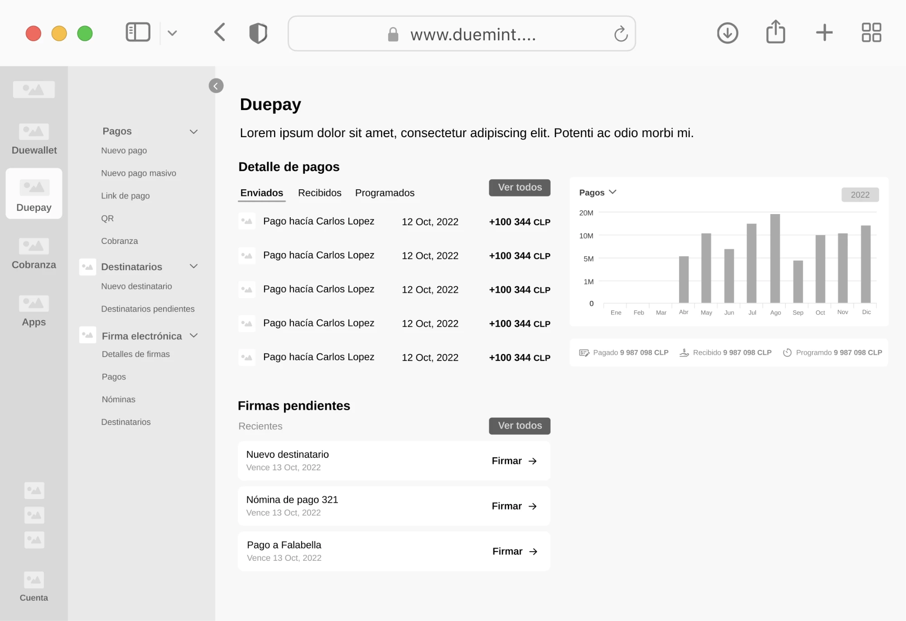
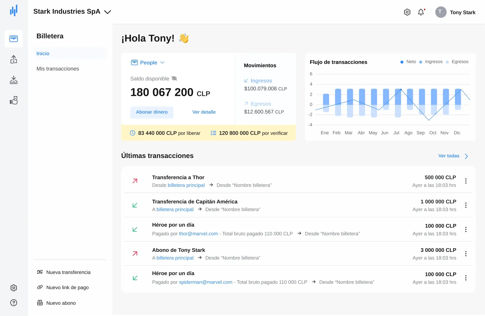
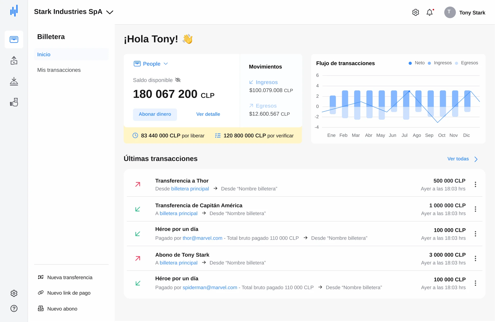
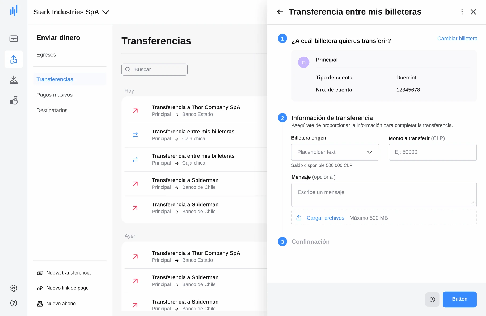
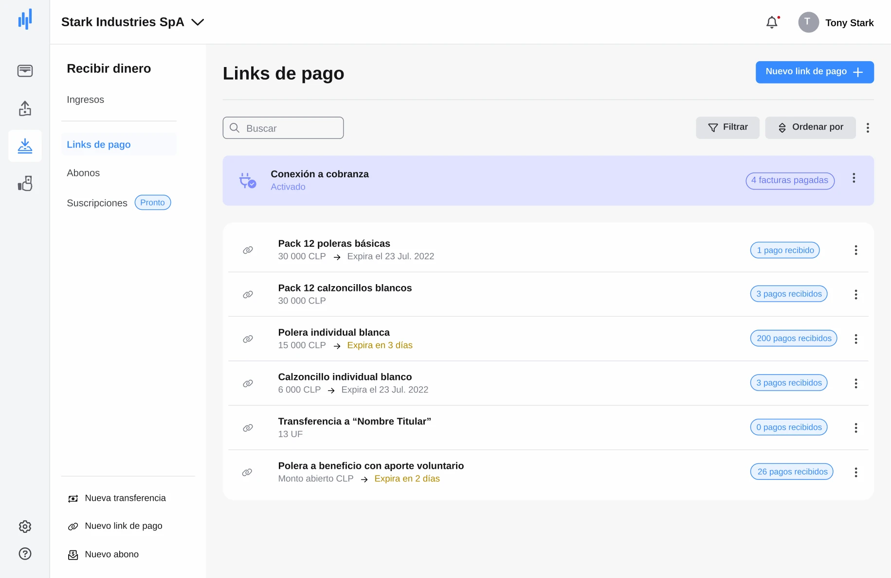
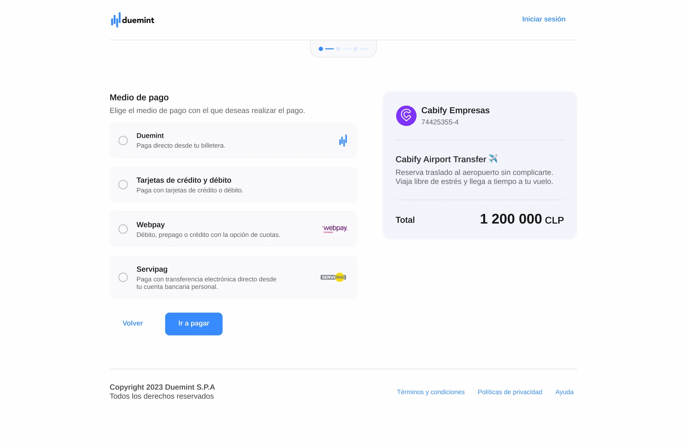
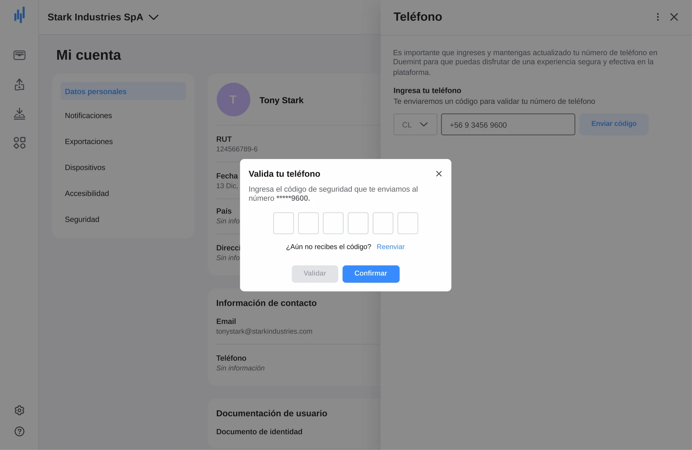
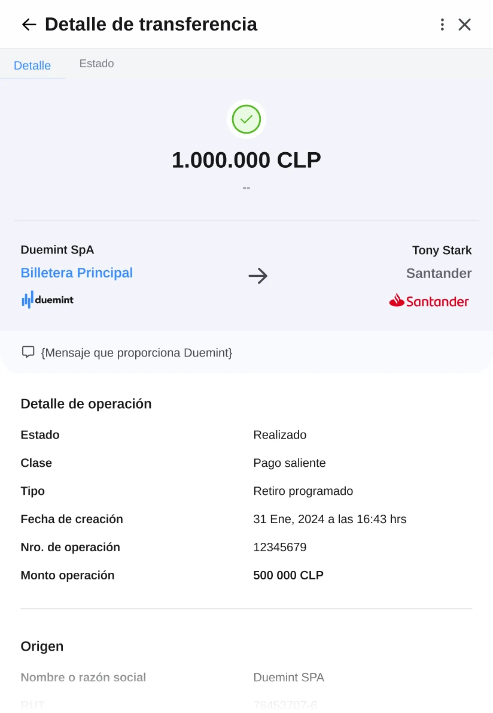
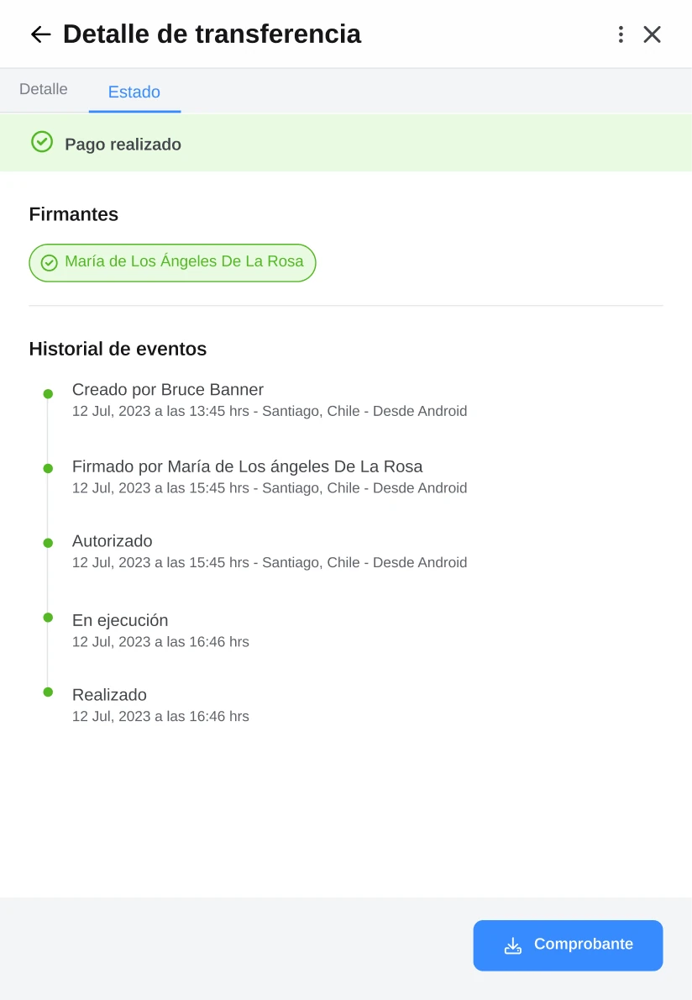

Effortless financial management for businesses of every size.
Duemint is a fintech platform that lets companies pay, transfer, and collect money from one digital wallet. We redesigned it end to end — turning a slow, manual back office workflow into an automated, self-serve product.
How might we simplify financial management — payments, transfers, and collections — so money moves faster and cash flow never gets lost in the process?
Why a financial product, and why now
During discovery we found two problems hiding behind one request. Small businesses were stuck in bureaucratic account-opening processes that delayed their whole financial setup. Larger companies wanted one unified place to collect, pay, automate repetitive tasks, and keep a real handle on income and outgoings. That gap is what turned "improve the invoicing tool" into "build a digital wallet."
We benchmarked the closest competitors to understand where the market already delivered, and where Duemint could differentiate.
- Wide range of payment methods
- Built for the LatAm market
- Fewer advanced features
- Limited global recognition
- Global reach, flexible integrations
- Strong API, fraud prevention
- Slightly higher fees
- Needs technical know-how to use fully
- Strong presence across LatAm
- Simple, accessible for small teams
- Limited customization
- Smaller coverage vs. global players
Getting closer to two very different users
What started as a small feature inside an existing product kept growing as we talked to users — until it was clear this needed to be a near-independent product with its own architecture.
- No fast way to receive payments from suppliers
- Banking red tape made opening a business account slow
- Needed several apps just to complete one transaction
- Mass payments were slow, and platform downtime made it worse
Those conversations shaped an information architecture built around how people actually think about their money — not around our internal modules.
Testing before committing to pixels
Before investing in high-fidelity screens, we tested low-fidelity wireframes with real usage tasks — recruiting a mix of current customers and people who'd only used competitor tools.
The fix wasn't cosmetic: we split the single "payments" module the team had originally planned into a clear wallet overview plus dedicated send/receive spaces — directly answering the confusion we saw in testing.


Built for scale, not just for launch
Alongside the wireframes, we built Duemint's design system in parallel — components, tokens, and a full Storybook library with auto-layout, so engineering could implement without guesswork.
What changed after launch
Six months after launch, Duemint saw measurable movement on both growth and adoption.
Duemint, in use
From the wallet overview to a fully auditable transfer, every screen was designed to remove a step — not add one.







What this project taught me
The biggest lesson was learning to prioritize by user need instead of by request volume. Everyone wanted mass payments and subscriptions on day one, but external constraints pushed those back — and the product still succeeded because we'd designed the core flows around what people actually got stuck on.
Investing real time in the design system paid off well past launch: it gave the team a scalable base to keep refining components without starting from scratch every time.